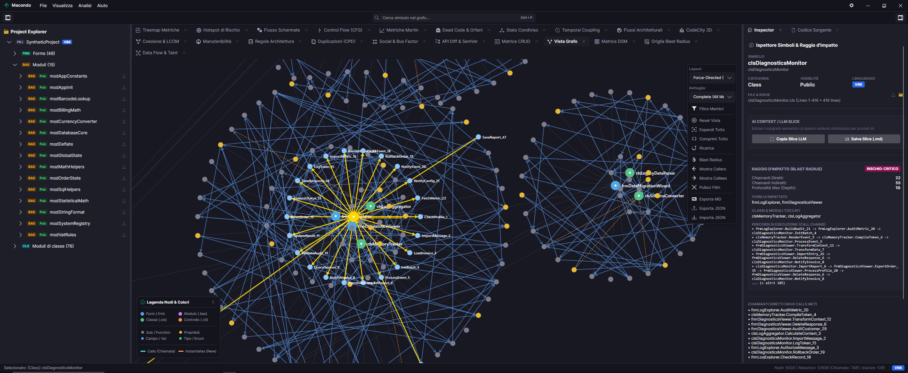

Analizzatore semantico, grafo delle dipendenze, calcolo del Blast Radius e suite completa di oltre 20 analisi per codebase legacy e moderne in Visual Basic 6.0 e C# / .NET.

Dall'esplorazione gerarchica delle chiamate al tracciamento ricorsivo del raggio di propagazione (Blast Radius), per rifattorizzare codice VB6 e C#/.NET in totale sicurezza.
Parsing AST esaustivo di soluzioni VB6 e C#/.NET. Visualizza chiamate, istanziazioni e tipi risolti su un canvas vettoriale a 60 FPS.
Traccia ricorsivamente ogni chiamante a monte per sapere con certezza quali Form, classi o componenti saranno impattati prima di toccare il codice.
Oltre 20 strumenti di analisi statica deterministica, diagnostica architetturale e valutazione del rischio integrati in un unico ambiente 100% offline.
Visualizzazione vettoriale interattiva a 60 FPS con 4 motori di layout (Radiale Standard, Affinità, Cluster a Isole e Force-Directed) ed espansione dinamica dei simboli.
Mappa visiva delle transizioni e navigazione tra le interfacce utente (Form, finestre e dialog) con individuazione dei punti di apertura e catene di transizione.
Decomposizione a blocchi base (Basic Blocks) per singola routine con percorsi di esecuzione, nodi decisionali, rami condizionali e cicli.
Diagramma circolare a corde che quantifica i volumi di chiamata e l'interdipendenza tra layer, cartelle, namespace e package architetturali.
Rappresentazione metaforica 3D del software: gli edifici rappresentano i file/moduli, l'altezza rispecchia le LOC, la base la complessità e il colore il livello di rischio.
Matrice di dipendenza ad alta densità per individuare immediatamente accoppiamenti nascosti, feedback loop e cicli tra moduli o sottosistemi.
Mappa gerarchica proporzionale con drill-down interattivo: individua istantaneamente dove si concentrano le righe di codice e la massima complessità ciclomatica.
Calcolo rigoroso di accoppiamento afferente/efferente (Ca, Ce), Instabilità (I), Astrazione (A) e Distanza dalla Sequenza Principale (D) secondo i principi di Robert C. Martin.
Misura di Lack of Cohesion of Methods (LCOM4 / Henderson-Sellers) per rilevare classi gonfie o con responsabilità frammentate da rifattorizzare.
Punteggio sintetico di manutenibilità (0–100) derivato da Volume di Halstead, Complessità Ciclomatica di McCabe e righe di codice effettive.
Verifica automatica di conformità dei vincoli architetturali (es. impedire accessi diretti dal layer di presentazione al database).
Tracciamento ricorsivo di tutti i chiamanti diretti e indiretti con valutazione del rischio di regressione da Basso a Critico e griglia di audit navigabile.
Scatter plot 2D che incrocia la Complessità Ciclomatica con la Frequenza di modifica/Fan-in per evidenziare i componenti più critici e vulnerabili.
Scansione e isolamento automatico di routine, classi o variabili mai chiamate per snellire la codebase prima di una migrazione.
Mappatura trasparente di variabili pubbliche e globali con tracciamento esatto di chi legge (Readers) e chi scrive (Writers) lo stato.
Mining della cronologia dei commit per individuare file e moduli non formalmente collegati ma che cambiano costantemente insieme nel tempo.
Individuazione di blocchi duplicati, routine clonate e pattern copia-incolla ridondanti da consolidare ed eliminare.
Tracciamento della propagazione di variabili e parametri attraverso le chiamate di metodo per verificare flussi sensibili e input non sanitizzati.
Mappatura incrociata tra moduli di business e tabelle database, classificando le operazioni Create, Read, Update e Delete effettuate.
Confronto semantico tra revisioni del codice per rilevare breaking change, modifiche a firme di metodi pubblici o aggiunte di contratti API.
Analisi della proprietà del codice e concentrazione della conoscenza per sviluppatore per calcolare il Bus Factor e prevenire colli di bottiglia nel team.
Estrai Repo Map e contesti semantici in formato Markdown e JSON pronti per Claude, ChatGPT, Gemini, Copilot, Cursor o esegui audit automatici nelle pipeline di CI/CD (GitHub Actions, Azure DevOps) per guidare il refactoring e la migrazione verso C# e .NET moderno.
Scarica direttamente l'eseguibile unico standalone Macondo per Windows. Singolo eseguibile portabile (Nessuna installazione), avvio istantaneo con supporto a VB6 e C#.
Scarica Macondo.exe (Windows x64)Nessun abbonamento, nessuna licenza a pagamento, nessun limite artificiale. Uno strumento creato per la community di sviluppatori.
Funziona al 100% in locale sul tuo computer. Nessun sorgente o metadato viene mai inviato all'esterno o sul cloud.
Cache persistente ultra-veloce su disco: apri progetti enterprise con centinaia di file e moduli in una frazione di secondo.
Esegui analisi headless da riga di comando, genera report in Markdown/JSON e integra quality gate architetturali nelle pipeline DevOps.
Esamina le righe di codice sorgente originali e le metriche LOC all'interno del Symbol Inspector con copia rapida negli appunti.
Controllo granulare delle computazioni in background, stima del tempo rimanente in tempo reale e cancellazione istantanea senza blocchi.